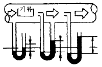
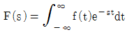
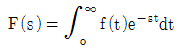
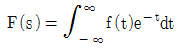
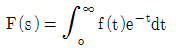
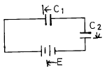
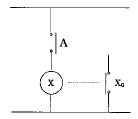
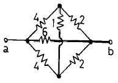

건축설비기사 (2003-03-16 기출문제)
1과목: 건축일반
1. 벽돌벽의 균열의 원인이 될 수 없는 것은?
- 벽돌 및 모르타르의 강도 부족
- 벽돌벽의 부분적 시공결함
- 기초의 부동침하
- 상하층의 개구부 위치의 일치
(정답률: 88%)

2. 사무소 설비계획에 관한 기술중 옳은 것은?
- 우편물 수취함은 각층에 배치한다.
- 화장실은 되도록 분산시키도록 한다.
- 지하층 식당에는 채광, 환기를 위하여 스모크타워(smoke tower)를 둔다.
- 엘리베이터는 출입구 문에 바싹 접근해 배치하지 않는다.
(정답률: 67%)
3. 일반적으로 대학교의 교사,운동장,녹지,공지등을 포함한 학생 1인당 교지면적 개산(慨算)은 얼마로 하는가?
- 20m2
- 30m2
- 60m2
- 70m2
(정답률: 47%)
4. 병원건축의 계획에 관한 설명으로 옳지 않은 것은?
- 중앙진료부문은 외래진료부와 병동부의 중간에 위치한다.
- 병실의 종류는 1인실, 2인실, 4인실, 6인실 등을 적절히 배분한다.
- 일반병동의 1개의 간호사 대기소에서 관리할 수 있는 병상수는 10‾5개 이하로 한다.
- 병원의 조직은 시설계획상 중앙진료부, 외래부, 공급부, 관리부 등으로 구분되며, 각부는 동선이 교차 되지 않도록 계획되어야 한다.
(정답률: 74%)
5. 다음 용어의 단위로서 옳지 않은 것은?
- 열전도율 : ㎉/m· h· ℃
- 열전달율 : ㎉/m2· h· ℃
- 열관류율 : ㎉/m3· h· ℃
- 열용량 : ㎉/℃
(정답률: 69%)
6. 다음중 결로의 방지 방법이 아닌 것은?
- 실내에서 수증기 발생을 억제한다.
- 비난방실 등으로의 수증기 침입을 억제한다.
- 적절한 투습저항을 갖춘 방습층을 단열재의 저온측에 설치한다.
- 벽체의 표면온도를 실내공기의 노점온도보다 크게 한다.
(정답률: 77%)
7. 측창채광(side lighting)의 특성 중 잘못된 것은?
- 통풍 및 차열(遮熱)에 불리하다.
- 투명부분을 개방용으로 대치할 수 있다.
- 주변상황에 큰 영향을 받는다.
- 조도분포가 불균형하여 넓은 실에는 불리하다.
(정답률: 67%)
8. 철근 콘크리트 구조에 대한 내용 중 틀린 것은?
- 기둥단면의 최소치수는 20㎝ 이상이다.
- 기둥의 최소단면적은 600cm2 이상이다.
- 기둥과 보의 주근간격은 2.5cm이상 또는 공칭지름의 2배 이상이다.
- 기둥의 띠철근은 6mm이상의 철근 또는 철선으로 한다.
(정답률: 40%)
9. 잔향시간이란 음원으로부터 발생되는 소리가 정지했을때 음에너지량이 몇 dB 감쇠하는데 소요되는 시간인가?
- 40dB
- 50dB
- 60dB
- 70dB
(정답률: 71%)
10. 실내조명설계에서 설계순서가 맞는 것은?
- 소요조도결정 - 광원선정 - 조명방식결정 - 조명기구배치
- 소요조도결정 - 조명방식결정 - 광원선정 - 조명기구배치
- 소요조도결정 - 광원선정 - 조명기구배치 - 조명방식결정
- 소요조도결정 - 조명방식결정 - 조명기구배치 - 광원선정
(정답률: 48%)
11. 리조트호텔의 대지조건으로 가장 거리가 먼 것은?
- 교통이 원활하고 주차장 시설이 충분해야 한다.
- 주위의 경치가 좋아야 한다.
- 물이 맑고 수원이 풍부해야 한다.
- 수해나 풍해 등으로부터 위험이 없어야 한다.
(정답률: 65%)
12. 1인당 소요공기량이 60m3/시간이고 자연환기 횟수가 3회/시간 이고 천장 높이가 2m일때 성인 1인용 침실면적으로 적당한 값은?
- 5m2
- 10m2
- 15m2
- 20m2
(정답률: 58%)
13. 개방형 사무실 계획의 설명으로 알맞지 않은 것은?
- 개실형에 비해 독립성이 적다.
- 개실형에 비해 내부 공사비가 낮다.
- 방길이에는 변화를 줄 수 있으나, 방깊이에 변화를 줄 수 없다.
- 개실형에 비해 전체면적을 유효하게 사용할 수 있다.
(정답률: 67%)
14. 결로에 관한 설명 중 부적합한 것은?
- 결로의 발생원인은 건물의 표면온도가 접촉하고 있는 공기의 노점온도보다 높을 경우 그 표면에 발생한다.
- 일시적 결로는 절대습도가 표면온도 조건에 비해서 급속히 증가하는 경우에 발생한다.
- 내부 결로의 방지책 중에 하나는 벽체 내부의 수증기압을 포화 수증기압보다 작게 한다.
- 결로의 발생원인 중 하나는 단열시공 불완전과 시공직후 미건조에 의한다.
(정답률: 54%)
15. 커튼월(curtain wall)에 대한 설명으로 옳지 않은 것은?
- 강도가 높아서 상부하중에 잘 견딘다.
- 고층건물에 주로 사용한다.
- 패스너(fastener)를 사용하여 구조체에 고정한다.
- 접합부위 시공에 주의한다.
(정답률: 55%)
16. 다음 설명 중 철근콘크리트 강도와의 관계로 옳은 것은?
- 슬럼프값이 클수록 커진다.
- 시멘트의 강도와는 무관하다.
- 물시멘트비가 작을수록 커진다.
- 잔골재의 최대치수가 작을수록 커진다.
(정답률: 48%)
17. 주택에서 다용도실은 어느 것과 가장 관계가 깊은가?
- 거실
- 침실
- 화장실
- 부엌
(정답률: 47%)
18. 철근과 콘크리트의 부착력에 관한 기술 중 옳지 않은 것은?
- 콘크리트의 압축강도가 클수록 부착력은 증가한다.
- 부착력은 피복 두께가 얇을수록 감소한다.
- 부착력은 철근(상부 또는 하부)의 위치와 관계없다.
- 철근의 주장이 클수록 부착력은 증가한다.
(정답률: 48%)
19. 백화점에 에스컬레이터를 설치하는 내용으로 옳지 않은 것은?
- 대량의 인원을 짧은 시간에 수송할 수 있다.
- 손님을 기다리게 하지 않고 종업원이 없어도 된다.
- 수송력에 비하여 점유 면적이 작다.
- 지하층 외에 각 층에 설치할 수 있다.
(정답률: 65%)
20. 다음 창호와 창호철물의 연결 중에서 잘못된 것은?
- Door Closer - 미서기문
- Crescent - 오르내리창
- Floor Hinge - 자재문
- Lavatory Hinge - 공중화장실 칸막이문
(정답률: 36%)
2과목: 위생설비
21. 소화설비에 있어서 각각의 표준 방수압력으로 틀린 것은?
- 옥내소화전 설비 : 1.7kg/cm2
- 물분무 소화설비 : 1.5kg/cm2
- 옥외소화전 설비 : 2.5kg/cm2
- 스프링클러 설비 : 1.0kg/cm2
(정답률: 19%)
22. 전동기와 펌프를 직결한 경우 펌프의 축동력에 어느 정도의 여유율을 주어 전동기의 소요동력을 구하는가?
- 0.1
- 0.25
- 0.5
- 0.75
(정답률: 24%)
23. 물을 수송하는 직선관로의 마찰손실수두에 관한 설명 중 옳은 것은?
- 마찰손실수두는 관경에 정비례한다.
- 마찰손실수두는 속도수두에 반비례한다.
- 관내 유속이 2배로 되면 마찰손실은 4배로 된다.
- 배관 길이가 2배로 되면 마찰손실은 8배로 된다.
(정답률: 60%)
24. 절수형 대변기에 관한 내용이다. 가장 부적당한 것은?
- 씻겨나오는 식 및 씻겨내리는 식의 대변기는 1회당 사용수량이 8ℓ 이하면 충분하도록 고안하여 만든 대변기를 말한다.
- 절수형 플러시 밸브 등 전용의 기구가 필요하기 때문에 설치가격은 약간 비싸다.
- 절수효과에 따른 경비절약 등으로 에너지 절약상 유리하다.
- 대소변을 분리하여 세척하는 방식의 대변기는 절수형 대변기로 간주할 수 없다.
(정답률: 63%)
25. 위생기구에 관한 설명중 틀린 것은?
- 대변기나 소변기의 세척수는 일정 수량이 일정 시간내에 급수되고, 또 배수되지 않으면 완전한 세척 작용은 어렵다.
- 세면기등에서 오버플로우가 있는 것은 반드시 그 기구 부속트랩의 하류에 접속한다.
- 급수를 받는 기구등의 오버플로우선과 급수기구의 배수구 선단과의 사이를 배수구 공간이라 하고, 일반적으로 배수관경의 2배 이상이 필요하다.
- 세면기 수전의 온수용과 냉수용 구별은 사용자가 수전을 바라보고 오른쪽이 냉수, 왼쪽이 온수이다.
(정답률: 25%)
26. 배수관에 대한 기술 중 틀린 것은?
- 배수관내에서 일정유속을 유지하게 되는 것을 종국유속이라 한다.
- 배수관경 결정법에는 정상유량법과 기구배수부하단위법이 있다.
- 기구 단위법에서는 최대 배수시 유량을 채택하고 있다.
- 배수관내의 물이 바닥 횡주관까지의 도달거리를 종국 길이라 한다.
(정답률: 30%)
27. 급탕설비에서 팽창관의 역할에 대한 설명 중 틀린 것은?
- 보일러의 자동 급수조절 장치이다.
- 안전밸브와 같은 역할을 한다.
- 보일러내의 공기나 증기를 배출시킨다.
- 물의 온도상승에 따른 체적 팽창을 흡수한다.
(정답률: 67%)
28. 연결송수관설비에 관한 설명으로 가장 적합하지 않은 것은?
- 연결송수관 전체를 사이어미즈 커넥션 또는 소방대전용전이라고 한다.
- 송수구, 송수관 및 방수구로 구성된다.
- 방수용 기구함은 길이 15m의 호오스 5개 이상을 수납할 수 있어야 한다.
- 건축물의 외벽, 창, 지붕 등에 설치하여 인접 건물에 화재가 발생하였을때 유수막을 형성하여 건물을 화재의 연소로부터 보호하는 방화 설비이다.
(정답률: 53%)
29. 배수트랩에 대한 다음 설명중 틀린 것은?
- 트랩은 하수 유해 가스가 역류해서 실내로 침입하는 것을 방지하기 위해서 설치한다.
- U트랩은 옥내 배수 수평주관의 말단에 부착한다.
- 드럼트랩은 싱크류의 배수용에 사용된다.
- S트랩은 욕실 및 다용도실의 바닥배수에 사용한다.
(정답률: 48%)
30. 도시가스 배관 방법에 관한 설명이다. 옳지 못한 것은?
- 공급본관에서 분지된 인입관은 지중매설 깊이를 60cm이상으로 한다.
- 가스관과 옥내 전기 배선과의 간격은 60cm 이상으로 한다.
- 가스미터 출구에서의 옥내배관은 횡주관을 선하향 구배로 한다.
- 공급관은 본관에서 직각방향이 되도록 인출한다.
(정답률: 50%)
31. 높이 10ｍ에 설치된 세척밸브식 대변기의 급수에 필요한 수도 본관의 최저압력은? (단, 배관내의 마찰손실은 4mAq임)
- 0.7㎏/cm2
- 1.0㎏/cm2
- 1.4㎏/cm2
- 2.1㎏/cm2
(정답률: 30%)
32. 대변기의 세척방식 중 세척밸브식에 대한 설명으로 틀린 것은?
- 수도본관의 수압이 낮은 지역에서는 수도직결의 경우밸브가 작동하지 않는다.
- 급수관은 최소 25mm를 필요로 하므로 일반 주택에서 도 사용할 수 있다.
- 수세시 단시간내에 다량의 물을 필요로 하므로 인접수전에 영향을 준다.
- 세척시 소음이 크다.
(정답률: 50%)
33. 급수배관의 관경결정에 관계없는 것은?
- 관경균등표
- 등압표
- 마찰저항선도
- 동시사용률
(정답률: 48%)
34. BOD 제거율을 바르게 나타낸 관계식은?
- (유입수의 BOD/유출수의 BOD)× 100
- (유출수의 BOD/유입수의 BOD)× 100
- {(유출수의 BOD-유입수의 BOD)/유출수의 BOD}× 100
- {(유입수의 BOD-유출수의 BOD)/유입수의 BOD}× 100
(정답률: 65%)
35. 유효면적이 800m2인 사무소 건물에서 한사람이 하루에 사용하는 급탕량이 10ℓ인 경우 이 건물이 하루에 필요로하는 최대 급탕량(m3)은 얼마인가? (단, 유효면적당 0.2인원/m2 이다.)
- 1.2
- 1.4
- 1.6
- 2.0
(정답률: 43%)
36. 급수관에서 발생되는 워터해머를 방지하기 위한 방법을 설명한 것중 틀린 것은?
- 수격압은 흐르는 유체의 유속에 비례하게 되므로 관내 유속을 가능한 빠르게 한다.
- 수격압을 흡수할 수 있는 급수관의 동일 구경 또는 1구경 큰 길이 300-600mm정도의 에어챔버를 설치 한다.
- 대구경의 볼탭을 설치해야하는 경우 소구경의 볼탭을 2개 설치하는 편이 좋다.
- 양수펌프에서는 워터해머 방지형 체크밸브를 사용하여 수주분리가 일어나지 않도록 한다.
(정답률: 58%)
37. 배관설비에서 신축 이음쇠의 종류가 아닌 것은?
- 슬리브형
- 벨로우즈형
- 루프형
- 플랜지형
(정답률: 47%)
38. 건물의 내부에 사용하는 급수배관 재료에 대한 설명으로 옳지 않은 것은?
- 아연도강관은 기계적 강도와 시공성은 양호하지만 부식으로 인한 수질오염의 문제가 있다.
- 수도용 동관은 내식성이 뛰어나고 마찰저항이 작다.
- 스테인레스 강관은 적수나 청수의 염려가 없지만 동결이나 충격에 약하다.
- 경질염화비닐관은 배관의 지지 및 고정이 어렵고 내화성이 없다.
(정답률: 39%)
39. 간접가열식 급탕설비와 관계가 가장 먼 것은?
- 가열코일
- 열동트랩
- 마노미터
- 서머스탯
(정답률: 34%)
40. 배수통기관을 설명한 것 중 틀린 것은?
- 결합통기관이란 배수수직관과 통기수직관을 연결하는 관을 지칭한다.
- 배수입상관의 끝부분을 연장하여 대기 중에 개방하는 것을 환상통기관이라 한다.
- 도피 통기관은 배수수평지관 최하류에 설치한다.
- 기구배수관과 통기관의 역할을 겸용하는 것을 습통기관이라 한다.
(정답률: 45%)
3과목: 공기조화설비
41. 덕트 재료중 부식성이 적은 일반 공조용 환기용 덕트로서 널리 사용되는 재료는?
- 아연도금강판
- 열간(냉간)압연박강판
- 알루미늄판
- 글라스울판
(정답률: 43%)
42. 냉동기 중 설비비는 많이 소요되나 운전비가 적게 드는 것은?
- 왕복동식
- 원심식
- 흡수식
- 스크류식
(정답률: 47%)
43. 다음 짝지은 것중 가장 부적합한 것은?
- 반도체 공장 - 수직층류형 클린룸
- 극장 - 머쉬룸형 흡입구
- 공장 - 유니트 히터
- 호텔객실 - 단일 덕트방식
(정답률: 62%)
44. 다음은 동관의 사용용도를 나타낸 것이다. 가장 부적합한 것은?
- 냉온수관
- 냉각수관
- 급수관
- 증기관
(정답률: 54%)
45. 냉방부하 계산시 구조체의 축열부하에 관한 다음 기술 중 부적당한 것은?
- 구조체의 열용량과 관련이 있다.
- 시간지연(time-lag) 현상을 유발한다.
- 간헐냉방을 하는 경우 예냉부하를 필요로 한다.
- 구조체의 열용량이 클수록 피크로드를 상승시킨다.
(정답률: 47%)
46. 덕트의 단면적이 줄었을 경우에 대한 설명이다. 옳은 것은?
- 속도가 커지지만 동압과 정압에는 변화가 없다.
- 속도가 줄어들지만 동압과 정압에는 변화가 없다.
- 속도가 줄어들며 동압은 감소하고 정압은 증가한다.
- 속도가 커지며 동압은 증가하고 정압은 감소한다.
(정답률: 58%)
47. 개별유닛 방식에 대한 일반적인 설명 중 옳지 못한 것은?
- 온도제어가 용이하다.
- 공간변경에 대한 대응이 쉽다.
- 환기능력에 한계가 있다.
- 습도제어가 용이하다.
(정답률: 24%)
48. 습공기 선도 상에 표시할 수 있는 습공기의 상태가 아닌 것은?
- 습구온도
- 비열
- 비체적
- 엔탈피
(정답률: 43%)
49. 송풍기의 풍량을 제어하는 방법의 하나로 비용이 많이 들지만 효율이 좋은 방식이며, 최근에는 인버터를 사용하여 전기의 주파수를 변화시키는 방식을 많이 사용한다. 이와 같은 송풍기 풍량제어방식은?
- 토출댐퍼에 의한 제어
- 흡입댐퍼에 의한 제어
- 가변 피치 제어
- 회전수에 의한 제어
(정답률: 56%)
50. 냉방시 틈새바람 200㎏/h에 대한 전열부하[㎉/h]를 구하면? (단,외기의 상태는 to : 32℃,xo : 0.018㎏/㎏', 실내공기의 상태는 ti : 22℃,xi : 0.010㎏/㎏', 공기의 비열은 0.24㎉/kg℃, 물의 증발잠열은 597.5㎉/kg이다.)
- 527㎉/h
- 887㎉/h
- 1235㎉/h
- 1436㎉/h
(정답률: 29%)
51. 인체의 온열환경에 관한 다음 기술중 가장 적당한 것은?
- clo는 의복의 단열력을 나타내는 단위로 나체상태를0 clo로 한다.
- met는 대사열량을 나타내는 단위로 취침시 1 met,착 석시 0.5 met 정도이다.
- 건구온도와 상대습도만으로도 종합적인 열환경을 평가할 수 있다.
- 인체의 온열환경을 좌우하는 주요요인은 기온, 습도, 압력이다.
(정답률: 40%)
52. 다음은 에너지 절약을 위한 실내온습도 설계조건이다. 가장 적당한 것은?

- 난방용 실내온도를 26℃로 유지한다.
- 냉방용 실내온도를 24℃로 유지한다.
- 난방용 실내 상대습도를 40%로 유지한다.
- 냉방용 실내 상대습도를 45%로 유지한다.
(정답률: 38%)
53. 고압, 대용량의 공조용으로 가장 적합한 보일러는?
- 수관 보일러
- 입형 원통보일러
- 연관 보일러
- 섹셔널 보일러
(정답률: 62%)
54. 피토관을 이용하여 덕트의 압력을 측정하고자 한다. 측정되는 압력의 순서가 바른 것은?
- 정압 → 전압 → 동압
- 전압 → 동압 → 정압
- 동압 → 전압 → 정압
- 정압 → 동압 → 전압
(정답률: 48%)
55. 상대습도가 60%인 습공기의 대기압이 745㎜Hg일때, 건공기의 분압은 얼마인가? (단,포화수증기의 압력은 25㎜Hg이다.)
- 720㎜Hg
- 730㎜Hg
- 740㎜Hg
- 750㎜Hg
(정답률: 19%)
56. 증기관의 주관에서는 몇m 마다 1개소의 비율로 트랩장치를 설치하는 것이 좋은가?
- 35m
- 40m
- 45m
- 50m
(정답률: 29%)
57. 다익형 송풍기의 압력 및 효율특성을 설명한 것 중 옳지 않은 것은?
- 최고압력점의 오른쪽 영역에서 최고 효율점이 존재 한다.
- 풍량이 증가함에 따라 소비동력이 현저히 증가한다.
- 최고압력점 왼쪽영역에서 압력이 감소한다.
- 일반적으로 고압의 공조용으로 사용한다.
(정답률: 54%)
58. 실내 기류 분포 중 콜드 드래프트(cold draft)의 원인이 아닌 것은?
- 인체주위의 공기온도가 너무 낮을 때
- 인체주위의 기류속도가 클 때
- 주위공기의 습도가 높을 때
- 주위 벽면의 온도가 낮을 때
(정답률: 27%)
59. 배관의 식별표시에 대한 조합으로 옳지 않은 것은?
- 물 - 청색
- 가스 - 황색
- 공기 - 흑색
- 증기 - 어두운 적색
(정답률: 50%)
60. 증기배관에서 증기유속의 설명으로 옳은 것은?
- 저압 증기관 최저 35㎧,고압 증기압 최저 45㎧
- 저압 증기관 최저 35㎧,고압 증기관 최대 45㎧
- 저압 증기관 최대 35㎧,고압 증기관 최저 45㎧
- 저압 증기관 최대 35㎧,고압 증기관 최대 45㎧
(정답률: 34%)
4과목: 소방 및 전기설비
61. 다음 중 3상 교류의 유효전력은?
- P = √3 VI cosθ [W]
- P = √2 VI cosθ [W]
- P = √2 VI sinθ [W]
- P = √3 VI sinθ [W]
(정답률: 29%)
62. 라플라스 변환의 정의는?




(정답률: 53%)
63. 다음 회로의 합성 정전 용량은?

- C1C2/C1+C2
- C1+C2
- C1C2
- C1+C2/C1C2
(정답률: 47%)
64. 다음 중 비상 발전기의 부하 대상이 아닌 것은?
- 도난경보장치
- 병원의 병실
- 은행의 현금 보관소
- 백화점의 공기조화설비
(정답률: 29%)
65. 600(W)의 전열기를 15분간 사용하였을때 발생한 열량(cal)은?
- 129,600
- 21,600
- 14,400
- 7,740
(정답률: 34%)
66. 다음은 변전소의 개폐장치에 관한 설명이다. 옳지 않은 것은?
- 차단기는 평상시에 부하 전류 선로의 충전전류, 변압기의 여자전류 등을 개폐한다.
- 부하개폐기와 차단기를 조합병용하면 경제적인 변전소의 설계가 가능하다.
- 전력 퓨즈는 대전류 및 약간의 고장전류를 차단하는 것으로 차단기와 보호계전기의 기능을 합한 것이다.
- 단로기는 개폐를 주목적으로 하는 것으로 평상시의 부하전류 정도에 해당하는 전류를 개폐한다.
(정답률: 34%)
67. 전선의 전압 220[v]를 올바르게 설명한 것은?
- 두전선에서 한쪽전선은 +220[v], 다른쪽 전선은 0[v]
- 두전선에서 한쪽전선은 +220[v], 다른쪽 전선은 -220[v]
- 두전선에서 한쪽전선은 +110[v], 다른쪽 전선은 -220[v]
- 두전선에서 한쪽전선은 +110[v], 다른쪽 전선은 0[v]
(정답률: 50%)
68. 다음 그림과 같은 회로는 무엇에 해당되는가?

- AND회로
- OR회로
- NOT회로
- NAND회로
(정답률: 50%)
69. 다음의 전기 발생장치 중에서 화학적 에너지 변화를 이용하는 것은?
- 축전지
- 열전대
- 동기발전기
- 전기집진기
(정답률: 56%)
70. 자동 조절밸브의 선정시 고려사항이 아닌 것은?
- 필요 유량결정
- 유량계수(Cv값)산출
- 필요한 제어속도
- 한계압력특성
(정답률: 30%)
71. 그림과 같이 접속한 회로에서 a, b 단자간에 합성저항은 몇(Ω)인가?

- 1
- 1.5
- 2
- 3
(정답률: 25%)
72. 역률이 100% 라는 것은 어느 경우를 뜻하는가?
- 전류가 전압보다 앞선다는 것
- 전류가 전압보다 뒤진다는 것
- 전압이 전류보다 크다는 것
- 전압과 전류의 변화가 동시에 발생한다는 것
(정답률: 56%)
73. 제어결과가 사이클링을 일으키며 잔류편차가 발생하는 제어동작은?
- 2위치 동작
- 비례 동작
- 적분 동작
- 비례 적분 동작
(정답률: 19%)
74. 엔탈피제어에 대한 설명중 옳지 않는 것은?
- 에너지절약 제어방식 중 하나이다.
- 통상적으로 외기냉방제어와 탄산가스농도제어와 같이 사용한다.
- 사람의 출입이 이용시간대에 따라서 크게 변화하는 백화점, 쇼핑스토아 등에 사용하면 효과가 크다.
- 주로 동하절기에 많이 사용해야 에너지 절약효과가 크다.
(정답률: 27%)
75. 천장에 붙여서 전등 코드를 접속시키는 기구는?
- 로우젯(rosette)
- 콘센트(consent)
- 소켓(socket)
- 리셉터클(receptacle)
(정답률: 40%)
76. 다음 중에서 보호장치에 속하지 않는 것은?
- 피뢰기
- 검루기
- 서키트 브레이크
- 변압기
(정답률: 63%)
77. 절연파괴 등의 전기사고가 발생하여 인체에 가해져도 위험이 없는 전압은?
- 규정 전압
- 선로 전압
- 안전 전압
- 감전 전압
(정답률: 57%)
78. 절연효과를 잃지 않도록 전선의 허용전류를 정해놓는 것은 무엇 때문인가?
- 온도계수
- 주울열
- 저항
- 도전율
(정답률: 27%)
79. 태양열 설비시스템의 구성요소가 아닌 것은?
- 집열기
- 축열조
- 열교환기
- 응축기
(정답률: 62%)
80. 항공장애등의 설치조건으로 적합한 것은?
- 수면으로부터 60m이상 높이의 건물에 설치한다.
- 반드시 건축물의 꼭대기에 설치한다.
- 1분간의 명멸 횟수는 70이어야 한다.
- 최대 광도는 1000cd 이상이어야 한다.
(정답률: 28%)
5과목: 건축설비관계법규
81. 소방법의 용어 정의 중 옳지 않은 것은?
- 관계인이라 함은 소방대상물의 소유자 또는 방재를 위한 공무원 등이다.
- 소방시설이라 함은 소화설비· 경보설비· 피난설비·소화용수설비 등이다.
- 위험물이라 함은 인화성 또는 발화성 등의 물품이다.
- 소방용기계· 기구 등이라 함은 소방용 기계· 기구 및 소화약제· 방염도료· 방염액 등이다.
(정답률: 50%)
82. 피난층 또는 지상으로 통하는 직통계단을 반드시 특별 피난계단으로 해야하는 경우가 아닌 것은?
- 갓복도식 공동주택을 제외한 건축물의 11층이상의 층
- 공동주택의 경우 16층 이상의 층
- 바닥면적이 500m2인 지하 3층
- 지하 6층으로 바닥면적이 300m2인 층
(정답률: 27%)
83. 다음 건축물의 용도 분류상 관계가 잘못된 것은?
- 제2종 근린생활시설 - 안마시술소
- 동물 및 식물관련시설 - 동물원
- 제1종 근린생활시설 - 양수장
- 숙박시설 - 한국전통호텔
(정답률: 32%)
84. 다음 중에서 건축법상 거실에 속하는 것은?
- 갱의실
- 계단
- 복도
- 부엌
(정답률: 34%)
85. 거실의 용도에 따른 조도기준으로 옳지 않은 것은?
- 독서, 식사, 조리 - 150룩스 이상
- 설계, 제도, 계산 - 500룩스 이상
- 검사, 수술, 시험 - 700룩스 이상
- 오락일반 - 150룩스 이상
(정답률: 38%)
86. 에너지이용합리화를 위한 효율관리기자재가 아닌 것은?
- 전기냉방기
- 전기승용차
- 조명기기
- 발전설비
(정답률: 27%)
87. 건축물에 설치하는 굴뚝에 관한 기술중 옳지 않은 것은?
- 굴뚝의 옥상 돌출부는 지붕면으로부터의 수직거리를 1m 이상으로 할 것
- 용마루가 있는 건축물에 있어서 굴뚝의 주위에 연기 배출을 방해하는 장애물이 있는 경우 그 굴뚝의 상단을 용마루보다 높게 할 것
- 금속제 또는 석면제 굴뚝으로서 건축물의 지붕속·반자위 및 가장 아랫바닥 밑에 있는 굴뚝의 부분은 금속외의 불연재료로 덮을 것
- 금속제 또는 석면제 굴뚝은 목재 기타 가연재료로부터 10㎝이상 떨어져서 설치할 것
(정답률: 60%)
88. 구조기준 및 구조계산에 따라 구조안전을 확인하지 않아도 되는 것은?
- 연면적 1,500m2인 철근콘크리트조의 건축물
- 건축물 높이가 15ｍ인 2층 건축물
- 층수가 3층인 건축물
- 기둥과 기둥 사이의 거리가 9ｍ인 공장 건축물
(정답률: 39%)
89. 7층의 유스호스텔 배연설비에 관한 사항 중 틀린 것은?
- 배연창의 유효면적은 1m2 이상이거나 건축물의 바닥면적의 1/100 이상으로 한다.
- 배연구는 손으로도 열고 닫을 수 있어야 한다.
- 방화구획이 설치된 경우에는 그 구획마다 1개소 이상의 배연창을 설치하여야 한다.
- 배연구는 예비전원에 의해 열 수 있도록 한다.
(정답률: 54%)
90. 근린생활시설· 위락시설· 숙박시설· 의료시설 및 복합건축물은 연면적 몇 제곱미터 이상인 경우에 자동화재탐지 설비를 설치하여야 하는가?
- 300m2
- 500m2
- 600m2
- 1,000m2
(정답률: 47%)
91. 소방법상 건축허가시 건축법에 의해 허가를 받아야 할 건축물 중 특수장소로서 소방본부장, 소방서장의 동의 대상물의 기준은?
- 연면적 200제곱미터 이상인 건축물
- 연면적 300제곱미터 이상인 건축물
- 연면적 400제곱미터 이상인 건축물
- 연면적 500제곱미터 이상인 건축물
(정답률: 48%)
92. 건축허가신청시 에너지절약계획서를 반드시 제출해야하는 건축물은?
- 바닥면적의 합계가 3,000m2인 개별식 냉· 난방설비의 판매 및 영업시설
- 연면적의 합계가 5,000m2인 중앙집중식 냉· 난방설비의 공연장
- 바닥면적의 합계가 1,500m2인 개별식 냉· 난방설비의 숙박시설
- 한 세대당 바닥면적이 100m2이고 세대수가 50세대인 공동주택
(정답률: 12%)
93. 스프링클러설비를 설치해야 할 소방대상물은?
- 지하층에 있는 관람집회시설로서 무대부분의 바닥면적이 200m2인 것
- 3층인 백화점으로서 바닥면적의 합계가 4,000m2인 것
- 20층인 아파트로서 16층
- 10층인 여관 용도의 건축물로서 9층
(정답률: 47%)
94. 에너지공급자가 제출하여야 하는 연차별 수요관리투자계획에 포함될 사항으로 부적합한 것은?
- 수요자의 계층별 분포
- 장· 단기 에너지수요전망
- 에너지절약잠재량의 추정내용
- 수요관리의 목표 및 그 달성방법
(정답률: 38%)
95. 다음 중 건축법에 규정되어 있지 아니한 용어는?
- 내수재료
- 방수재료
- 방화구조
- 난연재료
(정답률: 50%)
96. 다음 중 바닥면적에 산입되는 시설물은?
- 사무소의 지상층 조경시설
- 아파트의 승강기탑
- 학교 외벽의 중심선에서 1.5m 돌출한 노대
- 연립주택의 층고 1.4m의 다락
(정답률: 34%)
97. 에너지사용계획을 수립하여 산업자원부장관에게 제출하여야 하는 공공사업주관자의 전력을 사용하는 시설은 연간 사용량이 최소 얼마인가?
- 1천만 킬로와트시
- 2천만 킬로와트시
- 3천만 킬로와트시
- 4천만 킬로와트시
(정답률: 40%)
98. 에너지사용계획을 수립하여 산업자원부장관에게 제출하여야 하는 사업이 아닌 것은?
- 산업단지개발사업
- 관광단지개발사업
- 개발촉진지구개발사업
- 열사용기자재개발사업
(정답률: 30%)
99. 태양열을 이용하는 주택의 건축면적 산정방법 기준으로 옳은 것은?
- 외벽 중 외측벽의 중심선
- 외벽 중 공간부분의 중심선
- 외벽 중 내측 내력벽의 중심선
- 외측벽을 합한 두께의 중심선
(정답률: 42%)
100. 분뇨처리시설의 유지· 관리기준에서 각 설비의 관리상태의 점검기간과 점검결과 기록의 보존기간은?
- 주 1회 이상 점검, 최종기재를 한 날부터 5년간
- 월 1회 이상 점검, 최종기재를 한 날부터 5년간
- 주 1회 이상 점검, 최종기재를 한 날부터 3년간
- 월 1회 이상 점검, 최종기재를 한 날부터 3년간
(정답률: 29%)